Professor: Nacéra Seghouani
Student e-mail: jose-antonio.lorencio-abril@student-cs.fr
This is a summary of the course Massive Graph Management and Analytics taught at the Université Paris Saclay - CentraleSupélec by Professor Nacéra Seghouani in the academic year 23/24. Most of the content of this document is adapted from the course notes by Seghouani, [1], so I won’t be citing it all the time. Other references will be provided when used.
Graph-structured data is at the heart of complex systems and plays a major role in our daily life, science and economy. Examples of this data are the cooperation between billions of individuals, or communication infraestructures with billions of cell phones, computers and satellites, the interactions between thousands of genes and metabolites within our cells, and so on.
Therefore, understanding its mathematical foundations, description, prediction, and eventually being able to control them is one of the major scientific challenges of the 21st century.
A graph is a pair G =  , where V is the set of vertices and E ⊂ V × V is the set of edges. Usually, we denote
, where V is the set of vertices and E ⊂ V × V is the set of edges. Usually, we denote
 = n and
= n and  = m.
= m.
There are different types of graphs:
Undirected: ∈ E 
 ∈ E. That is, the edges goes in both directions.
∈ E. That is, the edges goes in both directions.
Directed:  ∈ E ⁄
∈ E ⁄ 
 ∈ E. That is, the edges have direction, and it is possible that an edge
goes from u to v, but not the other way.
∈ E. That is, the edges have direction, and it is possible that an edge
goes from u to v, but not the other way.
Weigthed vertices: the vertices have a weight. That is, there is a function wv : V → ℝ.
Weigthed edges: the edges have a weight. That is, there is a function we : E → ℝ.
Labeled vertices: the vertices have a label, Lv : V → , where is the set of labels.
, where is the set of labels.
Labeled edges: the edges have a label, Le : E →.
Bipartite: a graph G = is bipartite if there is a partition of the vertices, V = V 1 ∪ V 2, such that V 1 ∩ V 2 = ∅ and E = . That is, the vertices in V 1 only connect to vertices in V 2, and viceversa.
k-Partite: a graph G =  is k-partite if there is a k-partition of the vertices, V = V 1 ∪V 2 ∪...∪V k,
such that V i ∩ V j = ∅,∀i≠j and the is no edge e = such that u,v ∈ V i, for the same i.
is k-partite if there is a k-partition of the vertices, V = V 1 ∪V 2 ∪...∪V k,
such that V i ∩ V j = ∅,∀i≠j and the is no edge e = such that u,v ∈ V i, for the same i.
Multigraph or multidigraph: in this case, there can be several edges between two vertices. For this, we define the edges as a separate set E, and a function r : E → V × V , that assigns the vertices related by that edge.
Hypergraph: in this case, E ⊂ 2V . That it, the edges can relate 0 or more vertices. In this case, it is more appropriate to interpret E as a set of classes or hierarchies, rather than edges.
Complete: a graph is complete if E = V × V .
Some examples are:

Continuing with definitions, let G =  be a graph (directed or undirected). Let di+ and di- denote the number of
edges coming out and coming to vi, respectively. The degree of vi is
be a graph (directed or undirected). Let di+ and di- denote the number of
edges coming out and coming to vi, respectively. The degree of vi is
Note that it counts double for undirected graphs.
Now, let Ni+ and Ni- the set of successors and predecessors of vi, respectively. Then, the set of neighbors of vi is
A path between two vertices, u,v ∈ V , denoted u ⇝ v, is a sequence of vertices  , where
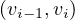 ∈ E,∀i = 1,...,k. The length of a path, L
, where
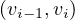 ∈ E,∀i = 1,...,k. The length of a path, L , is the number of edges in the cycle, that is,
k.
, is the number of edges in the cycle, that is,
k.
A cycle is a path from a vertex to itself, u ⇝ u.
The distance between two nodes, d , is the shortest path length between them:
, is the shortest path length between them:
The eccentricity of a node, ecc , is the greatest distance between u and any other vertex in the graph:
, is the greatest distance between u and any other vertex in the graph:
Note that this could be infinity if we cannot reach some node from u. Usually, we consider only reachable nodes, because this can give us information about the graph, but a value of infinity is not very informative.
The diameter of a graph, diam, is the greatest distance between two nodes in the graph:
The radius of a graph, rad, is the minimum eccentricity of any vertex in the graph:
The center of a graph, C , is the set of all vertices of minimum eccentricity, i.e., the graph radius:
, is the set of all vertices of minimum eccentricity, i.e., the graph radius:
Example 2.1. Compute the diameter, radius and center of the following graphs:

The solution is the following:
In each node, we show its eccentricity. The diameter is 6, the radius is 3 and the center is c (in blue).

Solution:

In this case, the diameter is 5, the radius is 3 and the center is  .
.
A partial graph of G =  is a graph G′ = 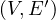, where E′⊂ E.
is a graph G′ = 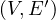, where E′⊂ E.
A subgraph of G =  is a graph G′ =
is a graph G′ =  where V ′⊂ V and E′⊂ E. Note that partial graphs are also
subgraphs.
where V ′⊂ V and E′⊂ E. Note that partial graphs are also
subgraphs.
A graph G =  is said to be connected if, and only if, ∀u,v ∈ V,∃u ⇝ v.
is said to be connected if, and only if, ∀u,v ∈ V,∃u ⇝ v.
A (strongly) connected component of G =  is a subgraph Gcc = , where ∀u,v ∈ V cc,∃u ⇝ v ∈ V cc.
That it, a connected subgraph. It is called strongly when the paths are directed.
is a subgraph Gcc = , where ∀u,v ∈ V cc,∃u ⇝ v ∈ V cc.
That it, a connected subgraph. It is called strongly when the paths are directed.
A graph G =  is a tree if, and only if, G is a connected graph without cycles. In this case, the graph has
m = n - 1 edges.
is a tree if, and only if, G is a connected graph without cycles. In this case, the graph has
m = n - 1 edges.
A graph G =  is a forest if, and only if, all connected components of G are trees.
is a forest if, and only if, all connected components of G are trees.
BFS is a method to traverse the nodes of a graph, by starting at one node and traversing all its neighbours. Then, all neighbours of its neighbours, and so on.
For this, we use a FIFO queue. The algorithm is:
Example 2.2. Apply BFS in the following graph, starting at node A.

Q=[A]. We visit A’s neighbours:
Q=[F,G]. Now, by lexycographical order, we visit F’s neighbours:
Q=[G,B,E]. Now, we visit G’s neighbours. Since it has no new unvisited neighbours, there is no change.
Q=[B,E]. Now, we visit B’s neighbours:

Q=[E,C]. Now, we visit E’s neighbours:
Q=[C,D]. Everything is visited, so the queue will be slowly emptied!
In the case of DFS, the objective is also to traverse the whole graph. The difference is that in this case we try to go as deep as we can in the graph before visiting more neighbours.
It can be implemented with a stack, let it be a explicit stack, or an implicit one.
The implementation with an explicit stack is the following:
The implementation with an implicit stack is recursive, and is as follows:
A graph, G =  , with n vertices and m edges can be encoded using different structures:
, with n vertices and m edges can be encoded using different structures:
Adjacency matrix: a matrix A ∈n×n, defined by
The adjacency matrix is symmetric for undirected graphs.
Adjacency list: a list L of length n in which each vertex holds a list of its neighbours:
If G is directed, the choice of the direction depends on the analytic needs.
Incidence matrix: a matrix B ∈n×m, defined by
Using graph traversal algorithms, propose an algorithm that computes the number of edges between a given vertex and all other vertices.
Given the following cycles with even and odd lengths (with the distances or depths from the grey vertex), what do you think about the case of graphs with an odd cycle (in number of edges)? Is this a characteristic property? State the general case.

Proposition: a graph contains a cycle C with an odd number of edges if, and only if, ∃ ∈ E|depth
∈ E|depth = depth.
= depth.
Proof : first, we know that all edges connect vertices of ’neighbouring’ depths. That it, ∀ ∈ E, it holds
≤ 1.
∈ E, it holds
≤ 1.
![[ = ⇒ ]](summary48x.png) By reduction ad absurdum, seeking a contradiction, suppose that ∀
By reduction ad absurdum, seeking a contradiction, suppose that ∀ ∈ C, with depth
∈ C, with depth ≠depth
≠depth .
This means that depth
.
This means that depth = depth ± 1. Therefore, there is, along the cycle, a node of even depth, followed by a
node of odd lenght, and so on. When we close the cycle, the final node is the inicial one, so its depth is 0 (even).
Therefore, we need an even number of edges, to conserve the parity.
= depth ± 1. Therefore, there is, along the cycle, a node of even depth, followed by a
node of odd lenght, and so on. When we close the cycle, the final node is the inicial one, so its depth is 0 (even).
Therefore, we need an even number of edges, to conserve the parity.
![[ ⇐= ]](summary54x.png) If there is an edge
If there is an edge  ∈ E with depth
∈ E with depth = depth
= depth , then we can consider the path tree that was used
to annotate the depths. In this tree, x and y have a first ancestor z in common, from which we can form an odd
cycle of size 2 ⋅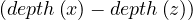 + 1 by adding the edge
, then we can consider the path tree that was used
to annotate the depths. In this tree, x and y have a first ancestor z in common, from which we can form an odd
cycle of size 2 ⋅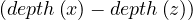 + 1 by adding the edge  to this subtree starting at
z.
to this subtree starting at
z.
Propose an algorithm that determines if a graph contains an odd cycle.
In a bipartite graph, can there be a cycle with an odd number of edges? Is this a characteristic property?
No, it is not possible!
Proposition: A graph is bipartite if, and only if, all cycles are of even size.
![[ = ⇒ ]](summary60x.png) If the graph is bipartite, any path alternates between each vertex of each partition to create a cycle ending
by the initial vertex. Therefore, all cycles must be of even size.
If the graph is bipartite, any path alternates between each vertex of each partition to create a cycle ending
by the initial vertex. Therefore, all cycles must be of even size.
![[ ⇐= ]](summary61x.png) Consider the partition of vertices with even depth V 1, and the partition of vertices with odd depth
V 2.
Consider the partition of vertices with even depth V 1, and the partition of vertices with odd depth
V 2.
Since there is no odd cycle, then, from question 2, we know that ∀ ∈ E it is depth
∈ E it is depth = depth
= depth ± 1.
Therefore, the graph is bipartite.
± 1.
Therefore, the graph is bipartite.
Propose an algorithm that allows to determine if a graph is bipartite. Test your algorithm in the following graph. Is it bipartite? Justify your answer.
The algorithm is the same as in exercise 3, because of exercise 4.
The proposed graph is clearly not bipartite, because there are several odd cycles.
Graph coloring is a way of coloring the vertices of a graph in such a way that no two adjacent vertices share the same color. A 2-colorable graph is a graph that can be colored with only 2 colors.
What is the link with the previous exercise? Justify your answer.
Proposition: a graph is 2-colorable if, and only if, it is bipartite.
Proof : ![[ =⇒ ]](summary65x.png) If it is 2-colorable, with colors red and blue. Then we take V 1 =
and V 2 = . G is clearly bipartite with this partition.
If it is 2-colorable, with colors red and blue. Then we take V 1 =
and V 2 = . G is clearly bipartite with this partition.
If it is bipartite, with partition V 1 and V 2, then we can color all nodes in V 1 in blue, and all nodes in V 2 in red. The graph is 2-colorable.
We want to write an algorithm, inspired by DFS search, which takes as input a graph, G =  ,
and which returns a pair
,
and which returns a pair  where result is True if the graph is colorable, False otherwise,
and color is a dictionary associating a color 0 or 1 to each vertex. This algorithm should stop as soon
as possible when the graph is not 2-colorable.
where result is True if the graph is colorable, False otherwise,
and color is a dictionary associating a color 0 or 1 to each vertex. This algorithm should stop as soon
as possible when the graph is not 2-colorable.
Compute the shortest path in the following graph using Dijkstra’s algorithm, starting at A:

We start with: dist =
| A | B | C | D | E | F | G |
| 0 | ∞ | ∞ | ∞ | ∞ | ∞ | ∞ |
Now, w = A and P = . We update dist =
| A | B | C | D | E | F | G |
| 0 | ∞ | ∞ | ∞ | ∞ | 3 | 1 |
Now, w = G and P = . We update dist =
| A | B | C | D | E | F | G |
| 0 | ∞ | ∞ | ∞ | 3 | 2 | 1 |
Now, w = F and P = . We update dist =
| A | B | C | D | E | F | G |
| 0 | 6 | ∞ | ∞ | 3 | 2 | 1 |
Now, w = E and P =  . We update dist =
. We update dist =
| A | B | C | D | E | F | G |
| 0 | 6 | 4 | 8 | 3 | 2 | 1 |
Now, w = C and P = . We update dist =
| A | B | C | D | E | F | G |
| 0 | 6 | 4 | 6 | 3 | 2 | 1 |
Now, w = B and P = . dist does not change.
Finally, w = D and P =  . dist does not change.
. dist does not change.
Given the following graphs:
Give the different representations of these graphs.
A1 =
|
|||||||
|
0 :  |
1 : |
2 :  |
3 :  |
4 : |
5 :  |
B1 =
|
|||||||||||
|  |
A2 =
|
|||||||
|
0 : |
1 :  |
2 : |
3 : |
4 :  |
5 : |
B1 =
|
||||||||||
|
Compute A2,A3. What does Aijr represents?
Aijr represents the number of paths of length r from node i to node j.
What is the complexity of Ar? Is it possible to reduce it?
Computing Ar is O, since it requires r products of complexity O .
.
However, we can reuse some results to reduce the complexity:
If r is even, we can do Ar = 2.
If r is odd, we can do Ar = A 2.
2.
Therefore, we can obtain Ar in O .
.
A norm is a function f that measures the size of a vector. It must satisfy the following properties:
f = 0 ⇐⇒ x = 0.
= 0 ⇐⇒ x = 0.
Linear on scale factors:

Triangle inequality:

A widely use family of norms are the p-norms:

with the most common one being the Euclidean norm, for p = 2:
The determinant of a square matrix is equal to the hypervolume of the parallelotope defined by the vectors of the matrix. It is 0 if, and only if, the set of vectors is colinear.
The determinant can be used for many things:
We can represents linear systems with matrices as Y = AX, and there are many methods to solve this efficiently.
With the determinant we can compute the characteristic polynomial of A, whose roots are the eigenvalues of A.
Some properties of the determinant are:
= 1, where I is the identity matrix.
 = 0 if A is singular (not invertible).
= 0 if A is singular (not invertible).
 =
=  .
.
= .
 = cn
= cn , where n is the dimension of A.
, where n is the dimension of A.
A square matrix, A, is invertible (non-singular, non-degenerate), with inverse denoetd A-1, if ∃B such that

in this case, A-1 = B.
Properties of the inverse:
 -1 = A.
-1 = A.
 -1 =
-1 =  T.
T.
-1 = B-1A-1.
-1 =  A-1 for c≠0.
A-1 for c≠0.
=  .
.
An eigenvector or characteristic vector of a linear transformation, T, is a non-zero vector that changes by a escalar factor, λ, when transformed by T. That is, v is an eigenvector of the linear transformation T if
There is a direct correspondence between n×n matrices and linear transformation in the n-dimenstional vector space into itself. That is, every linear transformation T can be represented as a matrix AT (the matrix depends on the chosen base). Therefore, we can say that AT has an eigenvector v if
The scale factors of the eigenvectors are called eigenvalues.
We can find the eigenvalues by solving a polynomial function on λ called the characteristic polynomial of AT:
Now, this equation has non-zero solution if, and only if,
Therefore, we can compute  and find all values of λ that makes it equal to 0.
and find all values of λ that makes it equal to 0.
Once we have the eigenvalues, we can use them to find the corresponding eigenvectors.
Example 2.4. Compute the eigenvalues and eigenvectors of A = .

This has as solutions
Therefore, we have λ1 = 1,λ2 = 3.
To find the eigenvectors, we solve
For λ1 = 1, it is

so the eigenvector associated to λ1 = 1 is

For λ2 = 3, it is

so the eigenvector associated to λ2 = 3 is
We call the algebraic multiplicity, ti, of the eigenvalue λi to its multiplicity as root of the characteristic polynomial:

Note that A can have at most n distinct eigenvalues, although some of them may be complex.
The eigenspace of an eigenvalue, λ, is the spave generated by the eigenvectors associated to λ.
The dimension of the eigenspace of λ is the geometric multiplicity of λ. The geometric multiplicity of an eigenvalue is, at most, its algebraic multiplicity.
Example 2.5. Let’s get some eigenspaces:
A =  , so
, so
 = = | =   + 4 + 4 | ||
| = |  = =  | ||
| = |   | ||
| = |   2. 2. |
This has roots λ1 = 1, with algebraic multiplicity 2, and λ2 = 2, with algebraic multiplicity 1.
Now, we get the eigenvectors associated to them:
For λ1 this is
so vλ1 = , with dimension 1 (it could be 2).
For λ2 this is

so vλ2 = , with dimension 1 (it could not be differently).
B = , so
| 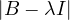 = |  = =   + 18 + 18 | ||
| = | ![[(4 - λ)(- 5- λ) +18]](summary165x.png) = =   | ||
| = |  = =  2 2 . . |
This has roots λ1 = 1, with algebraic multiplicity 2, and λ2 = -2, with algebraic multiplicity 1.
Now, we get the eigenvectors associated to them:

For λ1 = 1, we have
Therefore, the eigenspace associated to λ1 is
For λ2 = 2, we have
Thus, the eigenspace associated to λ2is

C =  ,
,
 = = |  = =  2 2 - 2 - 2 | ||
| = |  | ||
| = |  | ||
| = |  | ||
| = |  λ. λ. |

λ1 = 0:
so
λ2 = 1:
so
λ3 = 3:
so

D =  ,
,
| = | |||
| = |    + 12 + 2 - 8 + 12 + 2 - 8 + 1 - λ + 3 + 1 - λ + 3 | ||
| = | 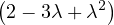 - 4 + 4λ - 4 + 4λ | ||
| = | - 2 - 2λ + 3λ + 3λ2 - λ2 - λ3 - 4 + 4λ | ||
| = | - λ3 + 2λ2 + 5λ - 6 |
To obtain the roots, we can use Ruffini:
| -1 | 2 | 5 | -6 | |
| 1 | -1 | 1 | 6 | |
| -1 | 1 | 6 | 0 | |
So λ1 = 1 is a root and we have now -λ2 + λ + 6 = 0, obtaining

and we get λ2 = -2 and λ3 = 3.

λ1 = 1:
Then, E =  .
.
λ2 = -2:

Then, E = .
λ3 = 3:

Then, E =
=  .
.
E =  ,
,
| 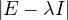 = |  | ||
| = |  2 + 4 + 4 - 4 2 + 4 + 4 - 4 - - - 4 - 4 | ||
| = |   + 2 - 8 + 2 - 8 + λ + λ | ||
| = | 54 - 36λ + 6λ2 - 9λ + 6λ2 - λ3 - 22 + 8λ + λ | ||
| = | - λ3 + 12λ2 - 36λ + 32. |
Again, we can use the Ruffini rule:
| -1 | 12 | -36 | 32 | |
| 2 | -2 | 20 | -32 | |
| -1 | 10 | -16 | 0 | |
So λ1 = 2 is a root, and we now have -λ2 + 10λ - 16 = 0, which gives us
Therefore, λ1 is a double root and the other root is λ2 = 8.
λ1 = 2:


If x = 0: y = z.
If x = t≠0: -y + z = -2t, working for y = t and z = -t.
So

λ2 = 8:

Therefore,
F = ,
| 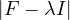 = | |||
| = | - λ2 + 2 - λ + 2 - λ | ||
| = |  | ||
| = |  | ||
| = |   2. 2. |
One root is λ1 = 1 with algebraic dimension 2, and λ2 = 2 with algebraic dimension 1.

λ1 = 1:
If x = 0: y = -z.
If x = t≠0: y + z = -t. This works for y = t,z = -2t.
Therefore,
λ2 = 2:

So
Another way to represent eigenvalues and eigenvectors is
where V = is the matrix formed by putting each eigenvector as a column, and

is the diagonal matrix formed by all eigenvalues.
A matrix A is diagonalizable if there exist n linearly independent eigenvectors. That is, if the matrix V is invertible:
This leads naturally to the eigen-decomposition of the matrix,

A real matrix, U, is orthogonal if UTU = UUT = I.
Example 2.6. Some examples of orthogonal matrices:
Identity: I
Permutation of coordinates:
Rotation:  .
.
Reflection:  .
.
A matrix A is said to be positive semi-definite when it can be obtained as the product of a matrix by its transpose:

Positive semi-definite matrices are always symmetric, because
A symmetric matrix A is positive semi-definite if all its eigenvalues are non-negative.
In this case, since eigenvectors are orthogonal, it is possible to store all the eigenvectors in an orthogonal matrix.
Therefore, the eigen-decomposition of a positive semi-definite matrix, A, could be
with U an orthogonal matrix.
As a consequence, the eigen-decomposition of a positive semi-definite matrix is often referred to as its diagonalization.
An alternative definition for positive semi-definite matrix is:
A is positive semi-definite if xTAx ≥ 0,∀x.
If it is xTAx > 0,∀x, then it is positive definite.
If it is xTAx ≤ 0,∀x, then it is negative semi-definite.
If it is xTAx < 0,∀x, then it is negative definite.
The rank of a matrix is the dimension of the vector space generated by its columns (or rows). This corresponds to the maximum number of linearly independent columns of A. A matrix whose rank is equal to its size is called a full rank matrix. Only full rank matrices have an inverse.
We can now define the Laplacian matrix for undirected graphs, as

or, equivalently,

where A is the degree is the matrix of G, and A its adjacency matrix.
What could you say about these matrices?
A = , det = -
= - , A is invertible. Its eigenvalues are λ1 = -1+
, A is invertible. Its eigenvalues are λ1 = -1+ and λ2 = -1-
and λ2 = -1- ,
with vλ1 =
,
with vλ1 =  and vλ2 =
and vλ2 =  .
.
B = . The second row is equal to the first row multiplied by - . Therefore, it is not
invertible.
. Therefore, it is not
invertible.
I: its determinant is 1. It is symmetric, orthogonal, its own inverse. Triple eigenvalue 1, with eigenspace the whole space.
Show that An = XΛX-1.
First, this is only true if A is diagonalizable. If that is the case, then we can proceed by induction on n:
n = 1: Obvious.
n = 2:

Suppose it is true for n - 1:
Then, for n, we have:

Find the eigenvalues and unit eigenvectors of ATA and AAT with A =  the Fibonnaci
matrix.
the Fibonnaci
matrix.
First of all, notice that A is symmetric, so ATA = AAT = A2 = .
 =
= 
 - 1 = 2 - 3λ + λ2 - 1 = λ2 - 3λ + 1. The roots of this polynomial
are
- 1 = 2 - 3λ + λ2 - 1 = λ2 - 3λ + 1. The roots of this polynomial
are
Now,
Therefore
with unit eigenvector v1 = 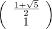.
And

with unit eigenvector v2 =  .
.
Without multiplying

find the determinant, the eigenvalues and eigenvectors. Why S is positive definite?
We have S = UΛUT with U orthogonal. Therefore, the eigenvalues of S are 2 and 5. Its determinant is 10. The eigenvectors are the eigenvectors of Λ rotated as well, that is:
S is positive definite because
now note that
so

because  is positive semi-definite (symmetric with positive eigenvalues).
is positive semi-definite (symmetric with positive eigenvalues).
For what numbers c and d are the following matrices positive definite?
A =  : all principal minors must be positive. That is:
: all principal minors must be positive. That is:
c > 0.
= c2 - 1 > 0. Combined with the previous one, this is c > 1.
= c3+2-3c. Roots: 1,
| 1 | 0 | -3 | 2 | |
| 1 | 1 | 1 | -2 | |
| 1 | 1 | -2 | 0 | |
 . We are only interested in the interval
. We are only interested in the interval  , in which
c3 - 3c + 2 > 0.
, in which
c3 - 3c + 2 > 0.Therefore, it is c > 1.
B = 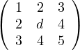 :
1 > 0.
 = d - 4 > 0 ⇐⇒ d > 4.
= d - 4 > 0 ⇐⇒ d > 4.
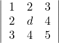 = 5d + 24 + 24 - 9d - 16 - 20 = -4d + 12 > 0 ⇐⇒ - 4d > -12 ⇐⇒ d < 3.
Therefore, there is no value for d for which B is positive.
Show that if λ1,λ2,...,λn are the eigenvalues of a matrix A, then Am has as eigenvalues λ1m,λ2m,...,λnm.
Induction on m.
m = 1: Obvious.
m = 2: Let vi be the eigenvector associated to λi, then
so λi2 is an eigenvalue of A2, with associated eigenvector vi.
Suppose it is true for m - 1, then, for m:
and we have the result.
What is the determinant of any orthogonal matrix?
If U is orthogonal, then UUT = I. Then,

Therefore,  = ±1.
= ±1.
For an undirected graph, both the adjacency matrix and the Laplacian matrix are symmetric. Show that the Laplacian matrix is positive semi-definite.
Remark 3.1. Observe that it is not the same for a matrix to be positive as to be positive semi-definite.
The Perron-Frobenius theorem for non-negative matrices leads to the characterization of non-negative primary eigenvectors. This is useful in stationary distributions, such as those of Markov chains and the famous Google’s page rank algorithm.
Theorem 3.1. Perron-Frobenius Theorem for positive matrices
If A is a positive matrix, then:
∃λ* > 0,v* > 0,2 = 1 such that A ⋅ v = λ*v* (v* is a right column eigenvector).
∃λ* > 0,w > 0,2 = 1 such that w ⋅ A = λ*w (w is a left row eigenvector).
For any other eigenvalue, λ, it holds, < λ* (λ* is a dominant eigenvalue, called the Perron eigenvalue).
λ* is unique and v* is unique (the only vector of unit length associated to λ*).
Theorem 3.2. Perron-Frobenius Theorem for non-negative matrices
If A is a non-negative matrix, then:
∃λ* > 0,v*≥ 0, 2 = 1 such that A ⋅ v = λ*v* (v* is a right column eigenvector).
2 = 1 such that A ⋅ v = λ*v* (v* is a right column eigenvector).
∃λ* > 0,w ≥ 0, 2 = 1 such that w ⋅ A = λ*w (w is a left row eigenvector).
2 = 1 such that w ⋅ A = λ*w (w is a left row eigenvector).
For any other eigenvalue, λ, it holds,  ≤ λ* (λ* is a dominant eigenvalue, called the Perron
eigenvalue).
≤ λ* (λ* is a dominant eigenvalue, called the Perron
eigenvalue).
If A is irreducible, then the vector v* is unique and it holds v* > 0.
If A is primitive, then the eigenvalue λ* is unique.
Note now that a graph, G =  , with adjacency matrix A, then: G is connected ⇐⇒∀1 ≤ i,j ≤,∃k ∈ ℕ* such
that Ai,jk > 0. This means that the adjacency matrix of connected graphs is irreducible.
, with adjacency matrix A, then: G is connected ⇐⇒∀1 ≤ i,j ≤,∃k ∈ ℕ* such
that Ai,jk > 0. This means that the adjacency matrix of connected graphs is irreducible.
Now, if a graph is k-connected, i.e., there is a k-path between all nodes, then its adjacency matrix is primitive. One sufficient condition for a graph to be k-connected is being connected and having Aii > 0 for some i.
A random walk on a graph, G =  , is a random process that starts from some vertex vi, and repeatedly moves to
a neighbour vj chosen at random (for example with uniform distribution). The random walk, ξt, is therefore a random
variable describing the position of a random walk after t steps. The probability of going from node i to node j is the
transition probability,
, is a random process that starts from some vertex vi, and repeatedly moves to
a neighbour vj chosen at random (for example with uniform distribution). The random walk, ξt, is therefore a random
variable describing the position of a random walk after t steps. The probability of going from node i to node j is the
transition probability,
The sequence of nodes can be regarded as a Markov chain, i.e. a discrete time stochastic process, where the position ξ0 is the initial state, according to the init distribution, P0, and from this point the next state only depends on the current state. The t-step transition probability is

Some examples are the path traced by a molecule in a liquid or a gas (Brownian motion), the price of a fluctuating stock, the financial status of a gambler, etc. The term random walk was first introduced by Karl Pearson in 1905.
The following is a basic visual example of a random walk on a graph:
Note that we can express the transition probability Pij in a matrix P. This matrix is the transition probabilities matrix, and it is row-stochastic or row-Markov, meaning,

This implies that

This means that 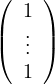 is an eigenvector and 1 is an eigenvalue. 1 is the largest eigenvalue because

so, for an eigenvalue λ,
so  ≤ 1.
≤ 1.
From the Perron-Frobenius theorem for non-negative matrices, we know that:
v* = is a right Perron eigenvector for P.
 ≤ λ* = 1 is a Perron eigenvalue.
≤ λ* = 1 is a Perron eigenvalue.
There exists a left Perron eigenvector πP = π.
If P is irreducible, the vector π is unique.
If P is primitive, the eigenvalue 1 is unique (there are no complex eigenvalues with norm 1).
Let πt be the row vector giving the probability distribution of ξt, that is, πit is the probability that the random walk is at node i at time t. Therefore, we can write

which, applied recursively, leads to

Or, we can take limits

If this limit exists, limtπt = π, then

Convergence is ensured if P is irreducible.
A common way to perform random walks on graphs is with the uniform probability. That is,

where di is the degree of node i. Equivalently,

The random sequence of vertices ξ0,ξ1,...,ξt,ξt+1,... visited on G is a Markov Chain with state space V and matrix transition probabilite P = D-1A.
A probability distribution π satisfies the balance condition if
If π satisfies the balance condition, then it is the stationary distribution for the undirected graph. To see this, notice that the balance condition can be rewritten as

Since the graph is considered without direction, Aij = Aji, and then

where c is a constant, for all i,j. Now, we know that ∑ iπi = 1, so
Therefore
Finally, it must be

In this case:

Therefore, we have seen that the stationary probabilities are proportional to the degrees of the vertices.
In particular, if G is d-regular, i.e., all nodes have degree d, then

is the uniform distribution. With this setup, a random walk moves along every edge with the same frequence.
The balance condition implies time-reversibility: the reversed walk is also a Markov chain.
Remark. In general, Hij≠Hji, so H is not symmetric.
The lazy random walk is a variation of the random walk, in which the walk stays at the current node with probability
 , and continue with the walk with the rest of the probability.
, and continue with the walk with the rest of the probability.
In this case, the transition matrix is
If Q is the transition matrix for the uniform random walk, then
Proof. Let Q be the transition matrix for the uniform random walk, then, the stationary distribution is

For lazy random walk, say the stationary distribution is π′. Then:
Therefore, since Q is irreducible, the uniqueness of π implies π′ = π. __
The web is very heterogeneous bu nature, and certainly huge. We cannot expect the web graph to be connected. Page and Brin proposed a way to overcome this problem, by ensuring the convergence of random walks on the web graph.
The idea is to fix a positive constant, p, between 0 and 1, called the damping factor, and which represents the probability that a user leaves the current page and goes to a random web.
Therefore, the page rank transition matrix is

where B = 
 .
.
p is usually chosen small, like 0.15, modelling a situation in which a surfer will, most of the time, follow the outgoing links and move on to one of the neighbours. A smaller percentage of time, the surfer will dump the current page and choose arbritrarily a different page from the web.
Proof. We need to proof that, for all i, it holds ∑ jPgi,j = 1.
| ∑ jPgi,j = | ∑
j Pij + pBij Pij + pBij | ||
| = |  ∑
jPij + p∑
jBij ∑
jPij + p∑
jBij | ||
| = |  ⋅ 1 + p∑
j ⋅ 1 + p∑
j | ||
| = | 1 - p + p ⋅ n | ||
| = | 1 - p + p | ||
| = | 1. |
‘